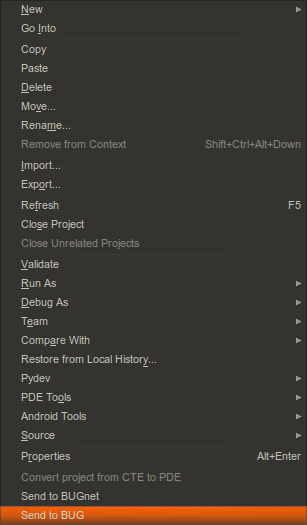
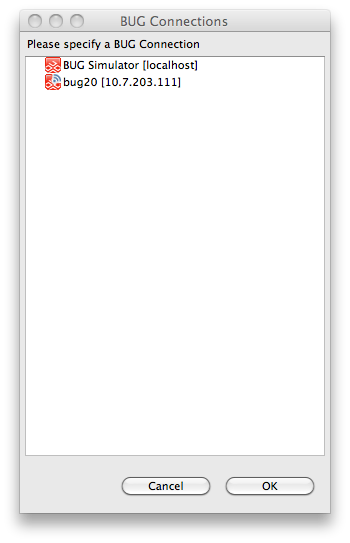

Send an Application to BUG
To send an application created in the Dragonfly SDK to BUG:
- Turn your BUG on and connect it to your network. If you are having trouble, please see http://buglabs.net/start
- Right click on the application in the Project Explorer pane. Select Send to BUG

- The BUG Connections window will open to let you choose the BUG to send to.
- In this example, we have a choice between the BUG Simulator and a hardware BUG (represented by an IP address).

- In this example, we have a choice between the BUG Simulator and a hardware BUG (represented by an IP address).
- Select a BUG and click OK. Go to the My BUGs view in Eclipse to check it out.
- Click on the Refresh button
 in My BUGs if your application does not appear automatically.
in My BUGs if your application does not appear automatically.
- Click on the Refresh button